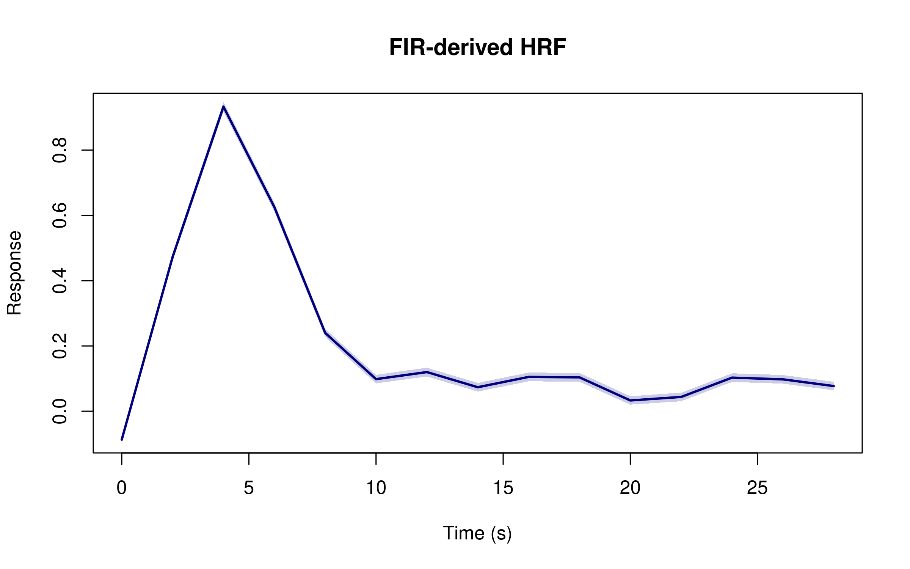

The OASIS Method: Optimized Analytic Single-pass Inverse Solution
Source:vignettes/oasis_method.Rmd
oasis_method.RmdWhat OASIS Adds Over Plain LSS
When you call lss() with a single-basis HRF and no ridge
penalty, the optimized backends already factor the shared structure
across trials into a single-pass solve. OASIS wraps that same estimator
in a richer workflow.
You get automatic design construction from event onsets via
fmrihrf, multi-basis HRF support (K > 1), ridge
regularization, analytical standard errors, and optional AR(1)
prewhitening—all in one call. If you only need the leanest single-basis
path, stick with method = "cpp_optimized".
Synthetic Data
We generate a rapid event-related dataset with jittered ISIs and known ground-truth betas.
n_time <- 300
n_voxels <- 100
TR <- 1.0
sframe <- fmrihrf::sampling_frame(blocklens = n_time, TR = TR)
isi <- runif(500, min = 3, max = 9)
onsets <- cumsum(c(10, isi))
onsets <- onsets[onsets < (n_time - 20)]
n_trials <- length(onsets)
true_betas <- matrix(rnorm(n_trials * n_voxels, mean = 1, sd = 0.5),
n_trials, n_voxels)
grid <- fmrihrf::samples(sframe, global = TRUE)
rset <- fmrihrf::regressor_set(
onsets = onsets, fac = factor(seq_len(n_trials)),
hrf = fmrihrf::HRF_SPMG1, duration = 0, span = 30, summate = FALSE
)
X_trials <- fmrihrf::evaluate(rset, grid = grid, precision = 0.1, method = "conv")Basic OASIS Call
Pass a design_spec instead of a pre-built X
and let OASIS construct the trial-wise design internally.
beta_oasis <- lss(
Y = Y, X = NULL, method = "oasis",
oasis = list(design_spec = list(
sframe = sframe,
cond = list(onsets = onsets, hrf = fmrihrf::HRF_SPMG1, span = 30)
))
)
dim(beta_oasis)
#> [1] 42 100The result is an n_trials x n_voxels matrix, exactly the
same shape you get from the other LSS backends. By default, OASIS
applies 5% fractional ridge regularization, which is worth keeping in
mind when you compare it to unregularized LSS fits.
Equivalence to LSS
With a single-basis HRF and no ridge penalty, OASIS returns the same coefficients as the optimized LSS path. You can verify this up to floating-point tolerance.
Z <- cbind(1, scale(1:n_time))
b_lss <- lss(Y, X_trials, Z = Z, method = "cpp_optimized")
b_oasis <- lss(Y, X_trials, Z = Z, method = "oasis",
oasis = list(ridge_mode = "absolute", ridge_x = 0, ridge_b = 0))
equiv_err <- max(abs(b_lss - b_oasis))
equiv_errUse the plain LSS backends when you have a fixed single-basis
X and want the leanest dependency surface. Prefer OASIS
when you need built-in design construction, multi-basis HRFs, ridge, or
standard errors.
Ridge Regularization
In rapid designs, close trial spacing produces correlated regressors. Ridge regression trades a small bias for a large variance reduction. OASIS offers two modes.
Absolute Ridge
You specify fixed penalty values added to the diagonal of the per-trial normal equations.
beta_noridge <- lss(
Y = Y, X = NULL, method = "oasis",
oasis = list(
design_spec = list(sframe = sframe,
cond = list(onsets = onsets, hrf = fmrihrf::HRF_SPMG1, span = 30)),
ridge_mode = "absolute", ridge_x = 0, ridge_b = 0
)
)
beta_abs <- lss(
Y = Y, X = NULL, method = "oasis",
oasis = list(
design_spec = list(sframe = sframe,
cond = list(onsets = onsets, hrf = fmrihrf::HRF_SPMG1, span = 30)),
ridge_mode = "absolute", ridge_x = 0.1, ridge_b = 0.1
)
)Fractional Ridge
The penalty scales relative to the mean diagonal energy in the design, adapting automatically to your data. A 5% fractional ridge is also the package default when you do not override the ridge settings.
beta_frac <- lss(
Y = Y, X = NULL, method = "oasis",
oasis = list(
design_spec = list(sframe = sframe,
cond = list(onsets = onsets, hrf = fmrihrf::HRF_SPMG1, span = 30)),
ridge_mode = "fractional", ridge_x = 0.05, ridge_b = 0.05
)
)Notice the variance reduction compared to the unregularized estimates:
ridge_summary <- data.frame(
Fit = c("No ridge", "Fractional 5%"),
MeanTrialVariance = c(
mean(apply(beta_noridge, 2, var)),
mean(apply(beta_frac, 2, var))
)
)
ridge_summary
#> Fit MeanTrialVariance
#> 1 No ridge 0.3679561
#> 2 Fractional 5% 0.3330022Practical starting points for fractional ridge: 0.005 for
well-separated trials (ISI >= 6 s), 0.01 for typical rapid designs,
and 0.02–0.05 for very dense events or multi-basis models. See
?lss for details.
Multi-Basis HRFs
Multi-basis models capture trial-to-trial variability in HRF shape. OASIS returns K rows per trial, interleaved by basis.
beta_spmg3 <- lss(
Y = Y, X = NULL, method = "oasis",
oasis = list(design_spec = list(
sframe = sframe,
cond = list(onsets = onsets, hrf = fmrihrf::HRF_SPMG3, span = 30)
))
)
dim(beta_spmg3)
#> [1] 126 100With K = 3 (canonical + temporal derivative + dispersion derivative),
the output has K * n_trials rows. Extract each component
using the K-stride pattern.
K <- 3
canonical <- beta_spmg3[seq(1, nrow(beta_spmg3), by = K), ]
temporal <- beta_spmg3[seq(2, nrow(beta_spmg3), by = K), ]
dispersion <- beta_spmg3[seq(3, nrow(beta_spmg3), by = K), ]
cat("Each component:", nrow(canonical), "trials x", ncol(canonical), "voxels\n")
#> Each component: 42 trials x 100 voxelsLarge temporal-derivative weights suggest timing variability across trials; dispersion-derivative weights indicate width changes.
FIR Basis
The Finite Impulse Response basis makes no parametric assumptions about HRF shape. Each trial contributes one coefficient per time bin.
fir_hrf <- fmrihrf::hrf_fir_generator(nbasis = 15, span = 30)
beta_fir <- lss(
Y = Y, X = NULL, method = "oasis",
oasis = list(
design_spec = list(sframe = sframe,
cond = list(onsets = onsets, hrf = fir_hrf, span = 30)),
ridge_mode = "fractional", ridge_x = 0.2, ridge_b = 0.2
)
)
dim(beta_fir)
#> [1] 630 100Moderate ridge is important here because FIR fits are high-dimensional. You can average across trials and voxels to recover a smooth HRF estimate.
n_bins <- 15
bin_width <- 30 / n_bins
fir_array <- array(beta_fir, dim = c(n_bins, n_trials, n_voxels))
fir_mean <- apply(fir_array, 1, mean)
fir_se <- apply(fir_array, 1, sd) / sqrt(n_trials * n_voxels)
tp <- seq(0, (n_bins - 1) * bin_width, by = bin_width)
plot(tp, fir_mean, type = "l", col = "navy", lwd = 2,
main = "FIR-derived HRF", xlab = "Time (s)", ylab = "Response")
polygon(c(tp, rev(tp)), c(fir_mean + fir_se, rev(fir_mean - fir_se)),
col = grDevices::adjustcolor("navy", 0.2), border = NA)
HRF Grid Search
When you are unsure which HRF shape fits best, pass a candidate grid
via hrf_grid and let OASIS pick a single global winner
using a matched-filter score.
hrf_grid <- create_lwu_grid(
tau_range = c(4, 8), sigma_range = c(2, 3.5),
rho_range = c(0.2, 0.5), n_tau = 3, n_sigma = 2, n_rho = 2
)
beta_grid <- lss(
Y = Y, X = NULL, method = "oasis",
oasis = list(
design_spec = list(sframe = sframe,
cond = list(onsets = onsets, span = 30),
hrf_grid = hrf_grid$hrfs),
ridge_mode = "fractional", ridge_x = 0.01, ridge_b = 0.01
)
)
dim(beta_grid)This selects a single HRF shared across all voxels, then refits with
it. For voxel-specific HRF estimation, see
vignette("voxel-wise-hrf").
Multiple Conditions
Real experiments often have multiple conditions. Place your target
condition in cond and other conditions in
others so their variance is accounted for as nuisance.
onsets_a <- seq(10, 280, by = 30)
onsets_b <- seq(25, 280, by = 30)
beta_multi <- lss(
Y = Y, X = NULL, method = "oasis",
oasis = list(design_spec = list(
sframe = sframe,
cond = list(onsets = onsets_a, hrf = fmrihrf::HRF_SPMG1, span = 30),
others = list(list(onsets = onsets_b))
))
)
dim(beta_multi)
#> [1] 10 100The others list ensures that condition B’s variance is
accounted for when estimating condition A betas, preventing
omitted-variable bias.
Standard Errors
Request analytical standard errors with
return_se = TRUE. You can then compute trial-level
t-statistics directly.
res_se <- lss(
Y = Y[, 1:10], X = NULL, method = "oasis",
oasis = list(
design_spec = list(sframe = sframe,
cond = list(onsets = onsets, hrf = fmrihrf::HRF_SPMG1, span = 30)),
return_se = TRUE
)
)
t_stats <- res_se$beta / res_se$se
cat("Mean |t|:", round(mean(abs(t_stats)), 2), "\n")
#> Mean |t|: 2.77Trials with larger standard errors typically have more overlapping neighbours or occur during noisier periods.
Prewhitening
fMRI time series are temporally autocorrelated. You can apply AR(1) prewhitening so that standard errors and t-statistics are valid.
beta_pw <- lss(
Y = Y[, 1:10], X = NULL, method = "oasis",
oasis = list(design_spec = list(sframe = sframe,
cond = list(onsets = onsets, hrf = fmrihrf::HRF_SPMG1, span = 30))),
prewhiten = list(method = "ar", p = 1)
)
dim(beta_pw)
#> [1] 42 10OASIS applies the whitening transform consistently to data, trial
design, and nuisance regressors. For advanced options (auto AR order
selection, voxel-wise or parcel-based pooling, ARMA models), see
?lss.
When to Use OASIS
Prefer OASIS when you want HRF-aware design construction, multi-basis HRFs (K > 1), ridge regularization, or standard errors in one call. It is especially useful for rapid event-related designs with hundreds of trials.
Prefer standard LSS backends when you already have a
single-basis design matrix X and want the leanest, most
transparent code path.
Next Steps
-
vignette("fmrilss")— foundational LSS concepts -
vignette("voxel-wise-hrf")— spatial HRF modeling -
vignette("sbhm")— library-constrained voxel-specific HRFs -
vignette("oasis_theory")— mathematical details